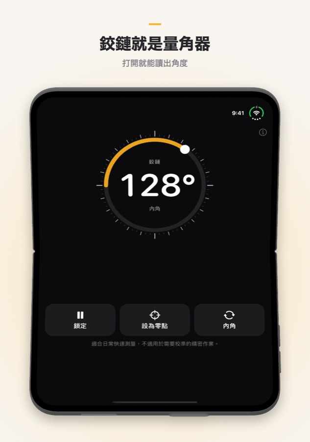
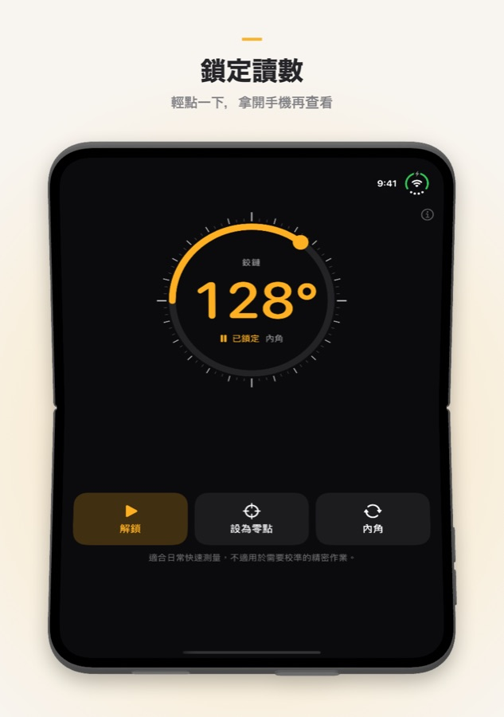
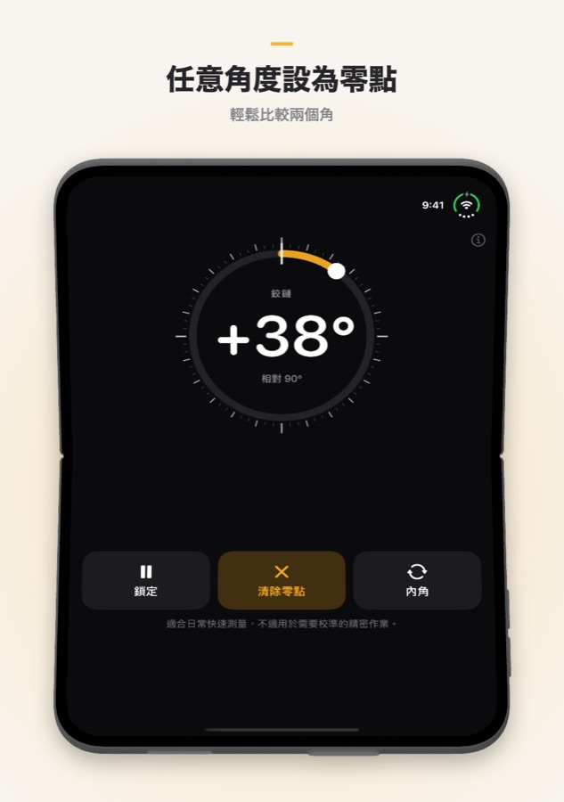

Fold Angle
摺疊 iPhone 本來就知道自己打開了多少度。Fold Angle 把鉸鏈變成量角器：把手機放進牆角、靠著門或卡在箱子邊緣，就能讀出兩半之間的角度。在其他 iPhone 和 iPad 上可當作傾角儀使用。
需要 iOS 17 或以上版本。
下載


支援
有問題、發現錯誤或需要協助？歡迎聯絡我們，每封郵件我們都會閱讀。
常見問題
- 支援哪些裝置？
Fold Angle 專為 iPhone Duo 打造，可直接讀取鉸鏈角度。在其他 iPhone 和 iPad 上，它透過動作感測器當作傾角儀使用，顯示裝置偏離水平的角度。 - 如何保留讀數？
點一下鎖定即可固定數值，拿開手機後再查看。點一下解鎖回到即時讀數。點兩下數字也可以。 - 「設為零點」有什麼用？
把目前的角度設為新的零點，方便比較兩個角或測量門打開了多少。點一下清除零點回到絕對角度。 - 「內角」和「外角」是什麼？
內角是兩個螢幕之間的角度，外角是摺痕背面的角度（360° 減去內角）。點一下按鈕即可切換。 - 平放時顯示約 2°，而不是 0°。
在傾角模式下，相機凸起會把手機一端墊高。先在平面上點一下設為零點再測量，或把手機螢幕朝下放置。 - 感覺不到震動。
Fold Angle 每 15° 輕震一次，剛好 90° 時重震一次。如果完全沒有感覺，請檢查 設定 → 聲音與觸覺 → 系統觸覺回饋 是否已開啟。 - 準確度如何？
它適合日常快速測量，不適用於需要校準的精密作業。需要準確結果時，請用量角器或水平儀確認。 - 會收集我的資料嗎？
不會。Fold Angle 沒有帳號、沒有伺服器，也不進行任何網路請求。感測器讀數只留在你的裝置上。
截圖



法律資訊
隱私政策
最後更新： 2026 年 10 月
簡介
Fold Angle 秉持一個簡單的原則：你的資料屬於你。本隱私政策說明 App 會存取哪些資訊以及如何處理。簡而言之，我們不會收到任何資料。
感測器
Fold Angle 讀取鉸鏈角度（iPhone Duo）和動作感測器（其他裝置），僅用於在螢幕上顯示角度。這些讀數在你的裝置上處理，絕不會被儲存、上傳或分享。
不收集資料
我們不收集、儲存、追蹤或處理任何個人資訊。App 不需要帳號或任何形式的註冊。
無需連網
Fold Angle 完全離線運作，不進行任何網路請求。
購買
所有購買均由 Apple 透過 App Store 處理。我們不會收到你的 Apple ID、付款方式或任何其他付款資訊。
第三方服務
Fold Angle 不使用任何第三方分析、廣告或追蹤服務，不與任何第三方分享資料。
兒童隱私
由於不收集任何個人資料，Fold Angle 符合《兒童線上隱私保護法》（COPPA）及全球類似法規。
政策變更
我們可能會不時更新本隱私政策。變更自發布之時起生效。建議你定期查看本頁面。
聯絡我們
如對本隱私政策有任何疑問，請聯絡：support [at] hoshinosoftware [dot] com
服務條款
最後更新： 2026 年 10 月
接受條款
下載或使用 Fold Angle 即表示你同意受本服務條款約束。如不同意，請勿使用本 App。
授權
Hoshino Software 依據本條款及 Apple 的 App Store 服務條款，授予你在 Apple 裝置上使用 Fold Angle 的個人、不可轉讓、非專屬授權。
允許的使用
你只能將 Fold Angle 用於合法目的，並同意不以任何違反適用法律法規的方式使用本 App。
並非精密儀器
Fold Angle 用於日常快速測量。讀數取決於裝置的感測器，可能有 1° 或更大的誤差。請勿在誤差可能造成傷害、損壞或損失的場合依賴本 App。
無保證
Fold Angle 按「現狀」提供，不附帶任何明示或默示的保證。我們不保證本 App 沒有錯誤、不會中斷或適用於任何特定目的。
責任限制
在適用法律允許的最大範圍內，Hoshino Software 不對因使用或無法使用 Fold Angle 而產生的任何直接、間接、附帶、特殊或衍生性損害承擔責任。
條款變更
我們可能會不時更新本服務條款。變更發布後繼續使用本 App，即表示你接受修訂後的條款。
適用法律
本條款受 Hoshino Software 營運所在司法管轄區的法律管轄。
聯絡我們
如對本服務條款有任何疑問，請聯絡：support [at] hoshinosoftware [dot] com